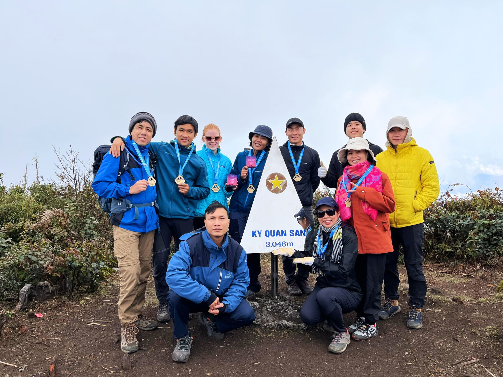
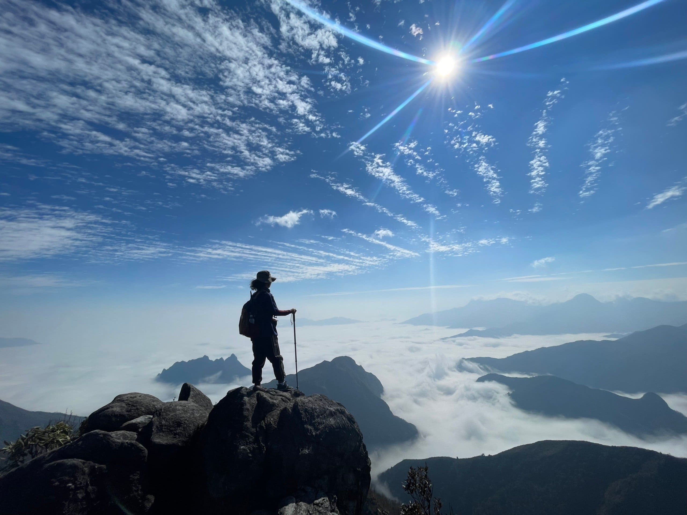
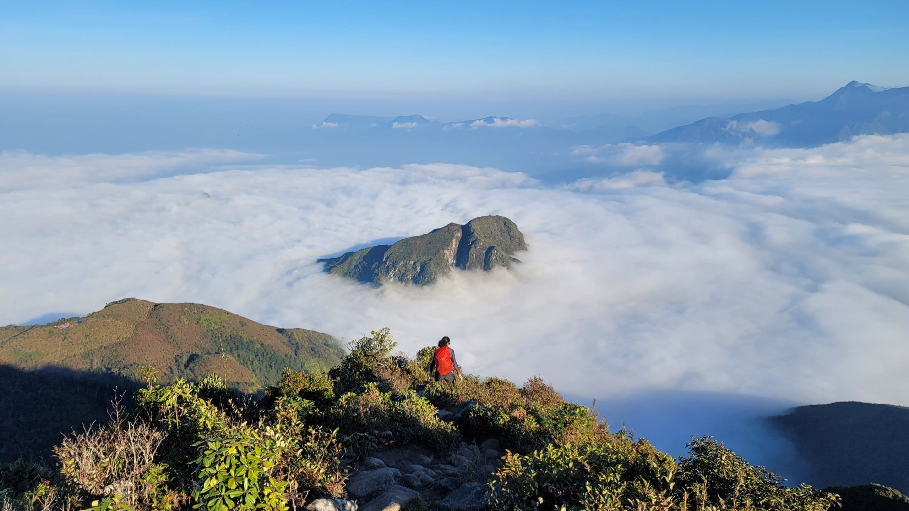

Ky Quan San (Bạch Mộc Lương Tử – 3.046m) là đỉnh núi cao thứ 4 Việt Nam, tọa lạc tại huyện Bát Xát, tỉnh Lào Cai. Đây là một trong những điểm săn mây nổi tiếng và hùng vĩ nhất của cộng đồng yêu leo núi Việt Nam.
Hành trình leo Ky Quan San nổi bật với những cánh rừng trúc bạt ngàn, thảm thực vật phong phú và đặc biệt là biển mây huyền ảo bao quanh đỉnh. Địa hình đa dạng, đòi hỏi thể lực tốt nhưng đổi lại bạn sẽ được chiêm ngưỡng khung cảnh thiên nhiên hùng vĩ hiếm có.
Tour ghép khởi hành cuối tuần. Liên hệ Hidden Path để nhận lịch cụ thể từng tuần.
Đặc điểm nổi bật
Bao gồm & Không bao gồm
✓ Bao gồm
- Xe đưa đón Hà Nội – Lào Cai – Hà Nội
- Hướng dẫn viên chuyên nghiệp
- Porter địa phương hỗ trợ 1:1
- Toàn bộ bữa ăn trong hành trình
- Lều ngủ, túi ngủ, thảm nằm
- Gậy leo núi, nước uống
- Huy chương chinh phục đỉnh
✗ Không bao gồm
- Chi phí cá nhân phát sinh
- Đồ ăn vặt, nước uống riêng
- Trang phục và giày leo núi
- Bảo hiểm du lịch
- Chi phí phát sinh do thời tiết
Lịch trình tour chinh phục Ky Quan San
19h00: Xe giường nằm chất lượng cao của Hidden Path bắt đầu đón khách tại điểm hẹn ở Hà Nội. Trưởng đoàn (Guide) làm quen với các thành viên, phổ biến lại một số lưu ý ngắn gọn. Quý khách lên xe nghỉ ngơi, dưỡng sức cho hành trình trekking ngày hôm sau.
Bữa ăn: Không. (Quý khách vui lòng ăn tối trước khi lên xe).
Nghỉ đêm: Ngủ đêm trên xe giường nằm.
06h30: Xe đến Bát Xát (Lào Cai). Đoàn vệ sinh cá nhân, tận hưởng không khí trong lành của vùng cao, sau đó dùng bữa sáng nạp năng lượng. Trưởng đoàn phân chia đồ đạc, giao vật dụng chung cho các Porter (người khuân vác địa phương) và hướng dẫn kỹ năng trekking cơ bản.
08h00: Chính thức bắt đầu hành trình trekking. Đoạn đường đầu tiên dẫn đoàn đi qua những bản làng yên bình của người Mông, băng qua những nương thảo quả thơm nồng và những con suối róc rách.
12h00: Đoàn dừng chân nghỉ ngơi và dùng bữa trưa picnic giữa rừng. Bữa trưa được các Porter chuẩn bị chu đáo để mọi người lấy lại sức.
16h30: Đoàn chạm chân đến điểm cắm trại Lán Núi Muối ở độ cao khoảng 2.100m. Đây là một trong những điểm ngắm hoàng hôn và biển mây đẹp nhất chặng đường. Quý khách nhận lều, thay đồ ấm và nghỉ ngơi thư giãn.
18h30: Thưởng thức bữa tối nóng hổi với các món đặc sản vùng cao được nướng trên bếp than hồng. Mọi người cùng nhau quây quần bên đống lửa, nhâm nhi ly trà gừng, chia sẻ những câu chuyện thú vị và chuẩn bị nghỉ ngơi sớm.
Bữa ăn: Sáng, Trưa, Tối.
Nghỉ đêm: Ngủ lều (đã được trang bị túi ngủ, thảm cách nhiệt ấm áp).
04h30: Thức dậy sớm, hít thở cái lạnh bủa vây của vùng núi cao. Đoàn ăn sáng nhẹ và nhâm nhi tách cà phê nóng, chuẩn bị đồ đạc gọn nhẹ (để lại balo lớn tại lán) cho chặng leo đỉnh.
05h00: Bắt đầu xuất phát trong màn sương sớm. Đoàn sẽ đi qua địa danh "Sống lưng khủng long" huyền thoại. Nếu may mắn, bạn sẽ được đón bình minh rực rỡ và những vạt mây bồng bềnh dưới chân.
08h30: Chạm tay vào chóp inox đánh dấu đỉnh Ky Quan San ở độ cao 3.046m – đỉnh núi cao thứ 4 Việt Nam. Cảm xúc vỡ òa giữa không gian hùng vĩ. Đoàn chụp ảnh kỷ niệm, nhận huy chương vinh danh và tận hưởng thành quả của mình.
10h00: Sau khi ngắm cảnh thỏa thích, đoàn bắt đầu hành trình hạ độ cao, quay trở xuống lán.
15h00: Về đến điểm cắm trại (Lán Núi Muối). Buổi chiều là khoảng thời gian tự do để bạn nghỉ ngơi giãn cơ, dạo quanh lán chụp ảnh hoặc phụ giúp Porter chuẩn bị bữa tối.
18h30: Dùng bữa tối thịnh soạn chúc mừng cả đoàn đã chinh phục thành công. Giao lưu đêm cuối giữa núi rừng.
Bữa ăn: Sáng, Trưa, Tối.
Nghỉ đêm: Ngủ lều trại.
06h00: Quý khách thức dậy ăn sáng, ngắm nhìn bình minh lần cuối trên núi. Thu dọn hành lý cá nhân và bắt đầu hành trình xuống núi trở lại Bát Xát. Chặng về chủ yếu là xuống dốc nên sẽ di chuyển nhanh hơn, đi xuyên qua những khu rừng trúc xanh mướt tuyệt đẹp.
11h30: Xe đón đoàn di chuyển về trung tâm thành phố Lào Cai. Đoàn dùng bữa trưa mang đậm hương vị Tây Bắc tại nhà hàng địa phương. (Gợi ý: Quý khách có thể tự túc trải nghiệm tắm lá thuốc của người Dao Đỏ để xua tan mệt mỏi sau những ngày leo núi căng thẳng).
13h30: Đoàn lên xe giường nằm khởi hành về lại Hà Nội. Quý khách nghỉ ngơi trên xe.
21h00: Về đến Hà Nội. Trưởng đoàn chia tay và hẹn gặp lại quý khách trong những hành trình khám phá tiếp theo. Kết thúc tour tốt đẹp!
Bữa ăn: Sáng, Trưa.
Độ khó
Tour leo núi Ky Quan San được đánh giá ở mức Thách thức – địa hình dốc cao liên tục, nhiều đoạn leo tay kết hợp. Phù hợp với người đã có ít nhất 1-2 lần leo núi 2N1Đ trở lên.
Chuẩn bị trước tour
Thư viện ảnh


